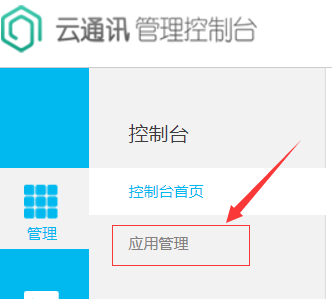
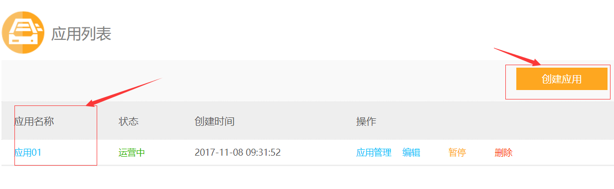
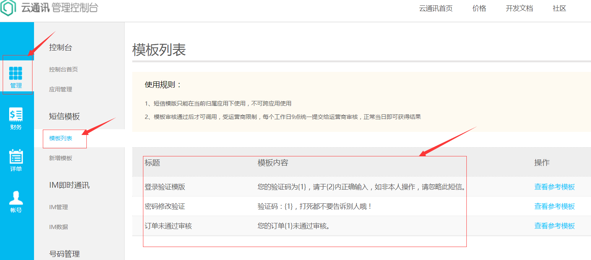
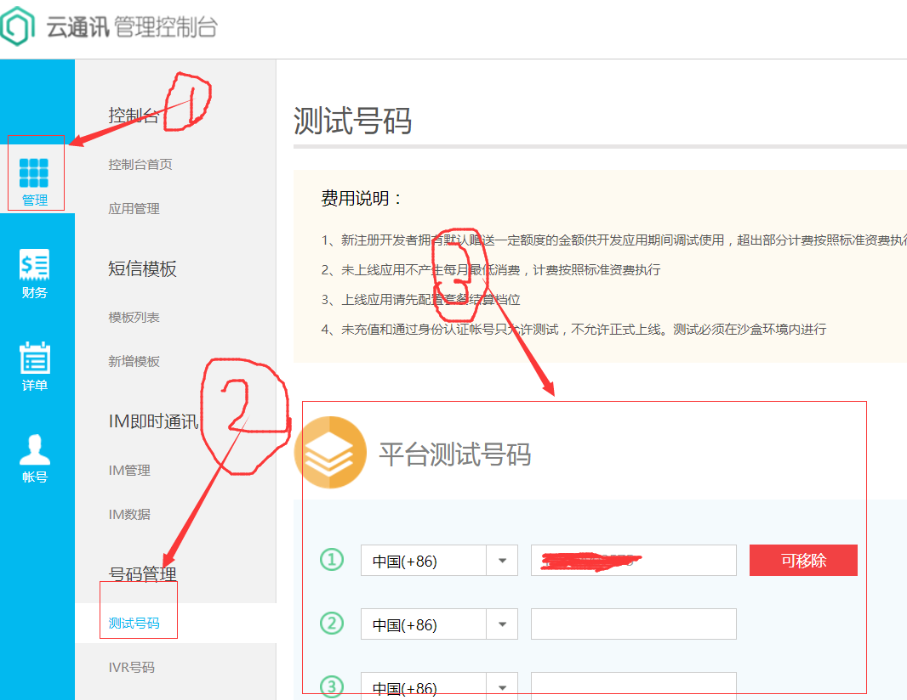
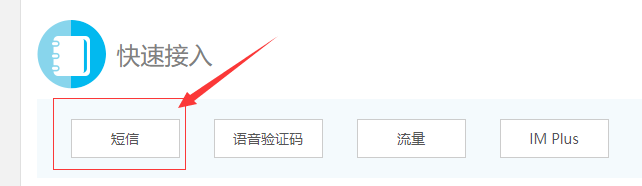
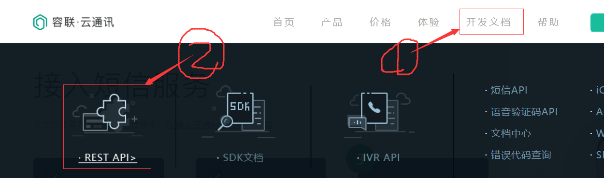
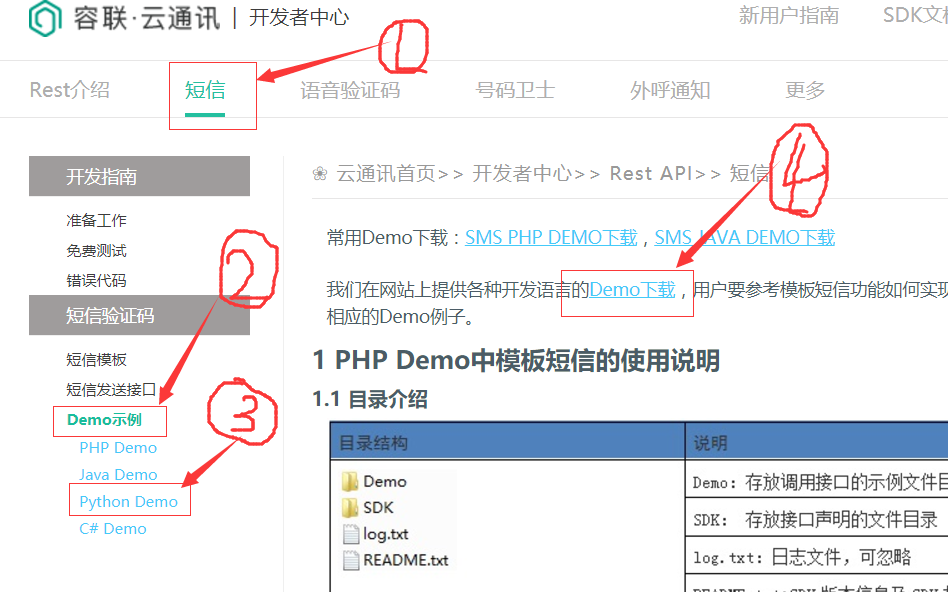
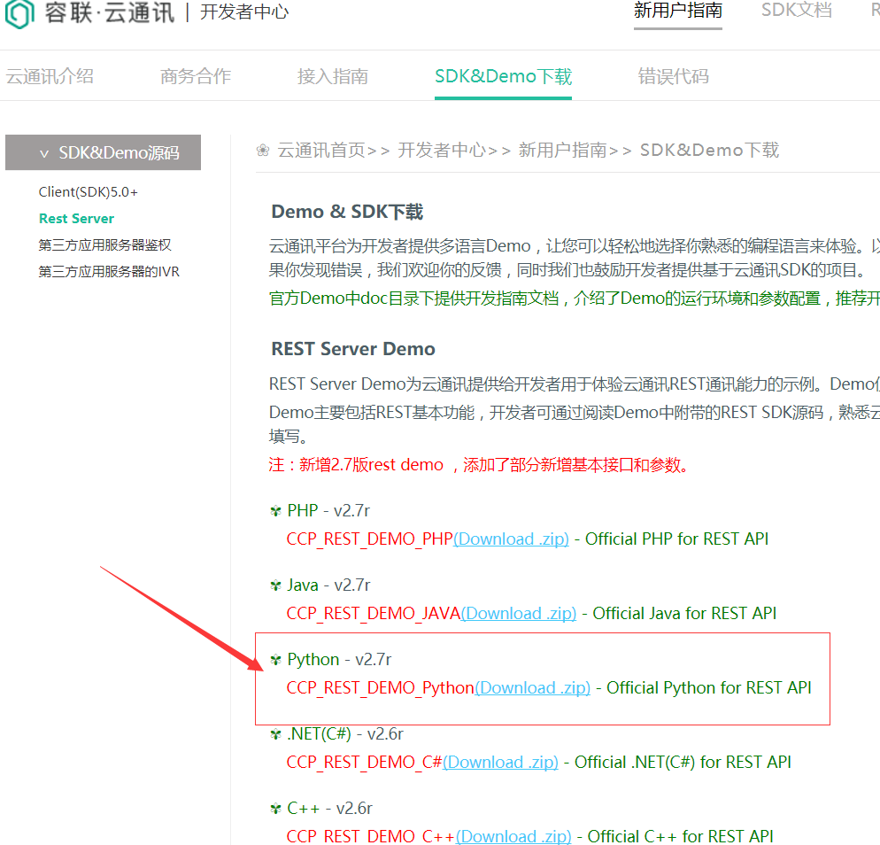
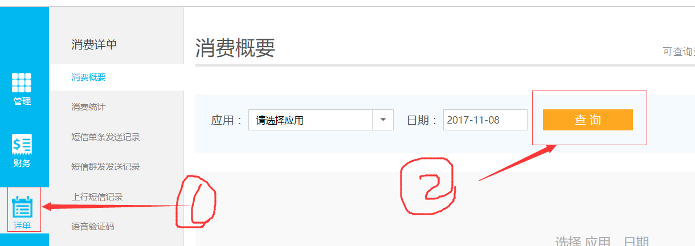

接入流程
- 按界面提示或按如下步骤进行接入
步骤1：应用
- 在管理控制台页面，点击左侧的“应用管理”->“应用”

- 在新页面中，可以启用“应用01”，也可以创建新的应用

步骤2：短信模板
- 点击左侧的“模板列表”

- 在转入金额之前，只能用测试的模板
步骤3：测试手机号
- 点击“测试号码”，在窗口中加入手机号

- 最多添加3个测试手机号
- 后面编写代码测试时，只能给这里指定的手机号发送短信
步骤4：接入SDK
- 在管理控制台首页，靠下面的位置，在“快速接入”区域点击“短信”，查看开发文档

- 在新窗口上侧“开发文档”，点击“REST API”

- 在新窗口中，点击“短信”->“Demo示例”->“Python Demo”，可以查看接口说明

- 点击上图中的“位置4”，可以下载python的sdk

步骤5：查看消费情况
- 在管理控制台左侧，点击“详单”，再选择应用、日期就可以查询了
